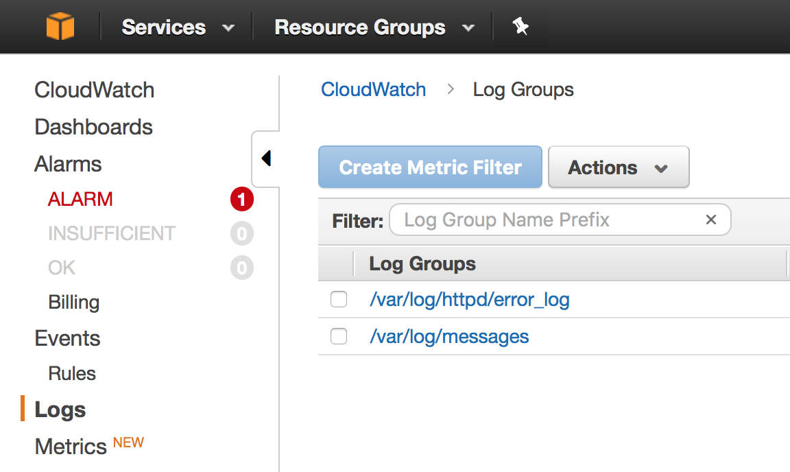

Infrastructure as Code with Terraform and AWS
Unit 6: Databases
This 18F workshop is in the worldwide public domain.
Learning objectives
- Understand how to build highly available databases with RDS
- Know how to pass credentials to running apps
- Be able to continuously deploy
Update ALB target group
resource "aws_alb_target_group" "workshop_alb" {
name = "workshop-alb-target-[name]"
vpc_id = "${aws_vpc.workshop_vpc.id}"
port = 80
protocol = "HTTP"
health_check {
matcher = "200,301"
path = "/status.php"
}
}terraform apply terraform
Let's set up logging
resource "aws_iam_role_policy" "s3_bucket_policy" {
...
"Statement": [
{
"Effect": "Allow",
"Action": [ "s3:Get*", "s3:List*" ],
"Resource": [ "arn:aws:s3:::18f-terraform-workshop",
"arn:aws:s3:::18f-terraform-workshop/*" ]
},
{
"Effect": "Allow",
"Action": [ "logs:CreateLogGroup", "logs:CreateLogStream",
"logs:PutLogEvents", "logs:DescribeLogStreams" ],
"Resource": [ "arn:aws:logs:*:*:*" ]
}
]
}
EOF
}Don't miss the comma! terraform apply terraform
Now we can see logs
Now we have a failing test, and in the logs you should see something like Couldn't create database connection with URI: Error: SQLSTATE[HY000] [2002] No such file or directory
Note: We're not going to create databases for everyone. For the rest of the class, the instructor will run the code.
RDS
- RDS creates pre-configured database instances on AWS
- PostgreSQL, MySQL, MariaDB, Oracle, and Microsoft SQL Server are all supported.
- Exports CloudWatch metrics such as %CPU, free space, connections
- RDS automatically handles backups (into S3)
- You can configure read replicas to scale out
- You can also have multi-AZ deployments for HA
- You can resize storage, upgrade the engine, or change instance type on demand
RDS

Database networking
Innetworks.tf
resource "aws_subnet" "db_subnet_1" {
vpc_id = "${aws_vpc.workshop_vpc.id}"
availability_zone = "us-east-1a"
cidr_block = "10.0.X.128/26"
map_public_ip_on_launch = false
}
resource "aws_subnet" "db_subnet_2" {
vpc_id = "${aws_vpc.workshop_vpc.id}"
availability_zone = "us-east-1d"
cidr_block = "10.0.X.192/26"
map_public_ip_on_launch = false
}
resource "aws_db_subnet_group" "db_subnet_group" {
name = "db-subnet-group"
subnet_ids = ["${aws_subnet.db_subnet_1.id}",
"${aws_subnet.db_subnet_2.id}"]
}Add a Security Group
Also innetworks.tf
resource "aws_security_group" "db" {
name = "db"
vpc_id = "${aws_vpc.workshop_vpc.id}"
ingress {
from_port = 3306
to_port = 3306
protocol = "tcp"
security_groups = [ "${aws_security_group.web_sg.id}",
"${aws_security_group.bastion_sg.id}" ]
}
}
Creating a Database
Create a file calleddb.tf
resource "aws_db_instance" "workshop_db" {
allocated_storage = 10
engine = "mysql"
multi_az = false # True in real life for HA
instance_class = "db.t2.micro"
name = "db18fworkshop"
username = "workshop"
password = "dummy_password"
publicly_accessible = false
storage_type = "gp2"
publicly_accessible = false
db_subnet_group_name = "${aws_db_subnet_group.db_subnet_group.id}"
vpc_security_group_ids = [ "${aws_security_group.db.id}" ]
}
output "rds_instance_id" {
value = "${aws_db_instance.workshop_db.id}"
}
Getting DB Creds To Our App
Connection String
In theaws_launch_configuration section of autoscale.tf:
user_data = <<EOF
#!/usr/bin/env bash
aws s3 cp s3://18f-terraform-workshop/credentials /etc/environment
echo "export HTTP_DB_URI=${aws_db_instance.workshop_db.endpoint}" \
>> /etc/environment
aws s3 cp s3://18f-terraform-workshop/provision.sh /root/
bash /root/provision.sh
EOFUnit 6 review
- We introduced test-driven development
- We created an alert
- We showed how to pass an AWS role to an EC2 host
- We built a provisioning and deployment system
- We refactored our code